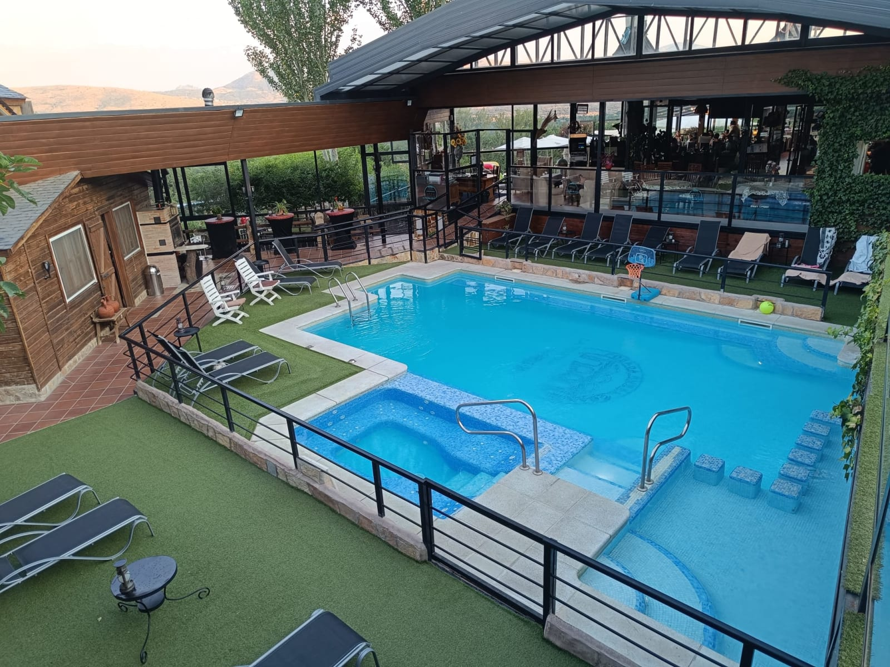
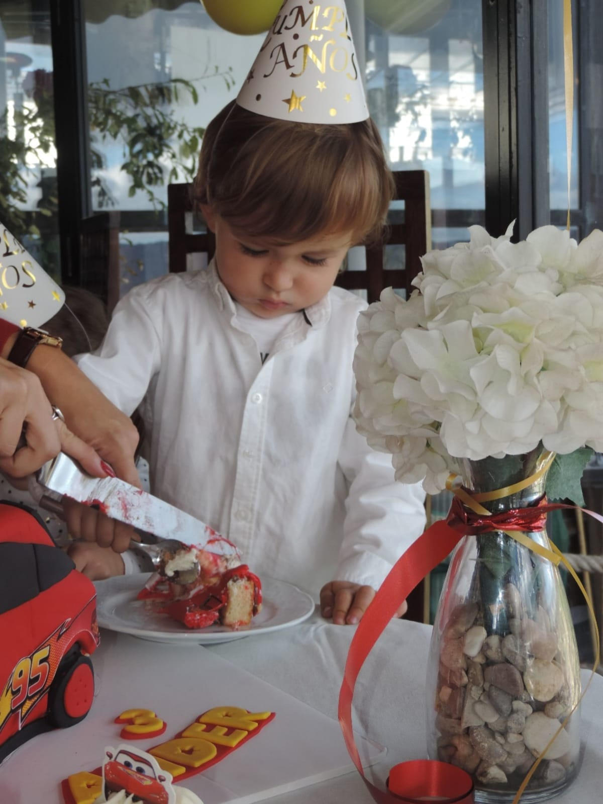
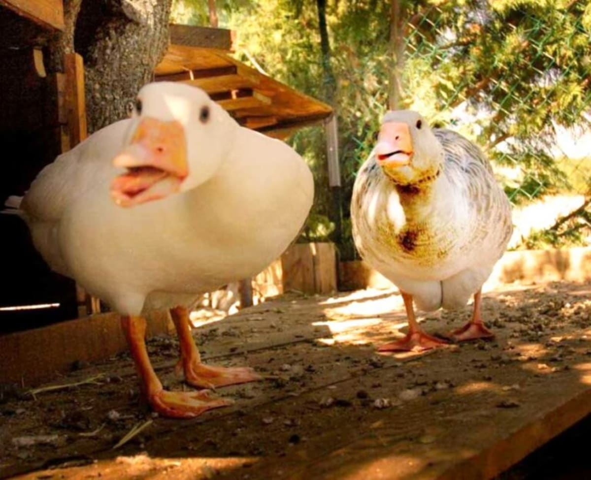
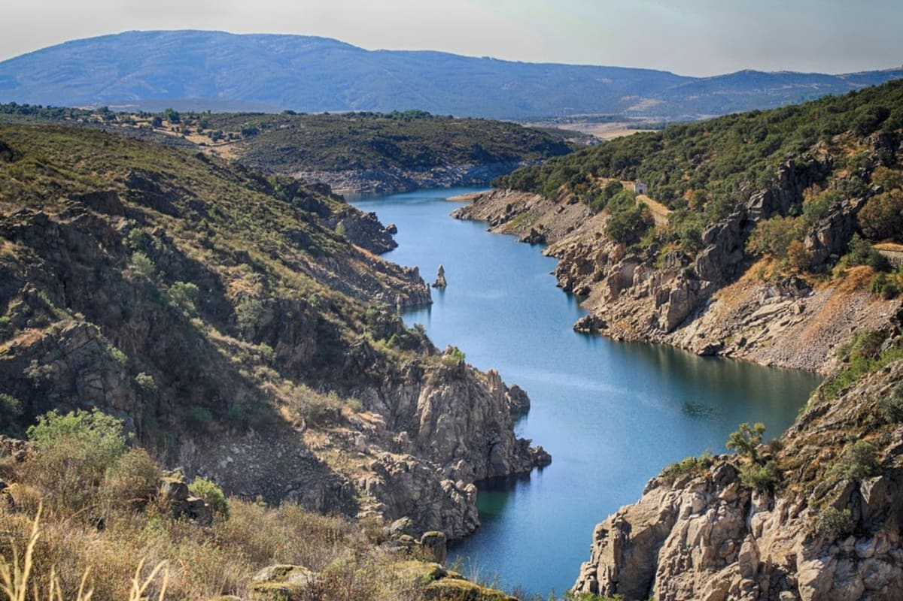
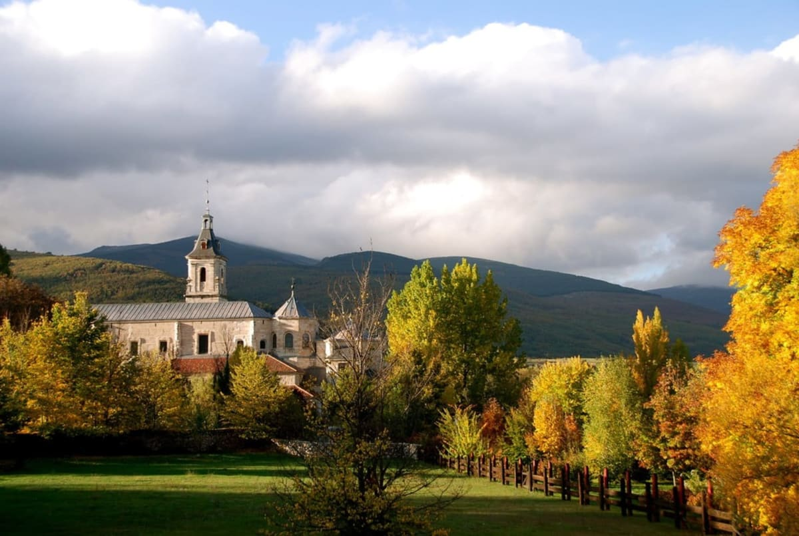
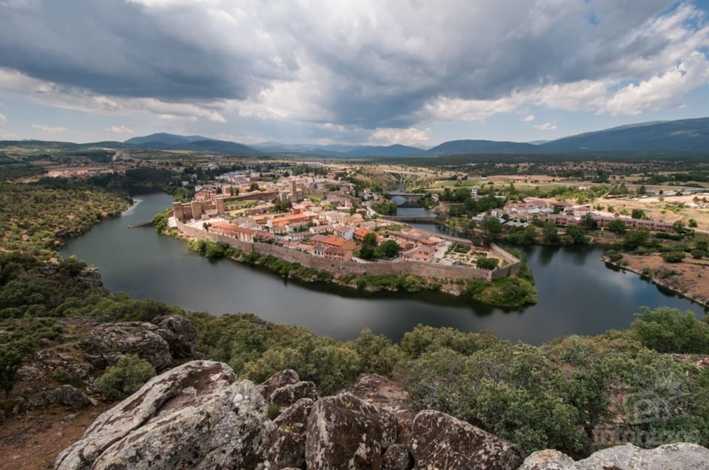
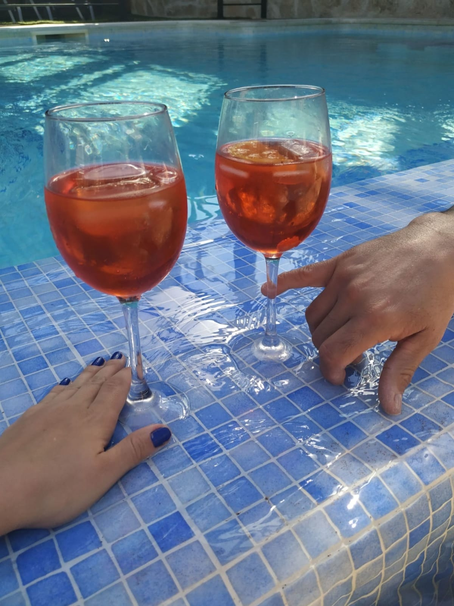

SPA y Circuito Termal
Piscinas lúdicas, jacuzzi con agua de manantial y zona Vulcano. Tratamientos de belleza y masajes para completar la experiencia.
Descubrir SPA
Un refugio familiar con piscina, circuito termal, granja con animales, parque infantil y un entorno natural privilegiado en Gargantilla de Lozoya.

La Tejera de Lozoya esta considerada entre los 5 mejores alojamientos para ir con familia en la Sierra de Madrid. Una posada rural muy familiar e íntima, con habitaciones familiares y suites con jacuzzi privado.
Todas nuestras instalaciones y actividades estan abiertas e incluidas en la estancia: piscinas, circuito SPA, granja con animales, parque infantil, pista deportiva y mucho mas.
Un complejo pensado para que toda la familia disfrute sin salir de la posada. Piscina, SPA, granja, deporte y ocio en plena Sierra Norte de Madrid.
Piscinas lúdicas, jacuzzi con agua de manantial y zona Vulcano. Tratamientos de belleza y masajes para completar la experiencia.
Descubrir SPAEstanque y granja con animales donde adultos y niños disfrutan de visitas guiadas y actividades al aire libre.
Descubrir GranjaDesde habitaciones dobles hasta suites familiares con jacuzzi privado y terraza. Todas con baño privado y aire acondicionado.
Ver habitacionesPlay-Land exterior con toboganes, balancines, cama elástica, piscina de bolas y castillo hinchable. Zona Peque-Land interior para los mas pequeños.
Saber masPista multideportiva con padel, baloncesto y fronton. Zona gym, sala fitness, billar americano, dardos y futbolin.
Ver masSalon totalmente acristalado con impresionantes vistas al valle del Lozoya y al pantano. El lugar perfecto para desconectar.
DescubrirUn lugar donde la familia entera encuentra su espacio: los niños con la granja y el parque, los adultos con el SPA y la tranquilidad de la Sierra.





Desde que llegas, todo esta preparado para que solo tengas que disfrutar. Instalaciones, actividades y naturaleza, sin salir de la posada.
Habitaciones acogedoras con todo lo necesario. Desde dobles intimas hasta suites familiares con jacuzzi y terraza privada.
Piscina, SPA, granja, parque infantil, padel, billar... Todas las instalaciones incluidas en tu estancia, sin extras.
El Salon-Mirador 360 grados, los paseos por el entorno y la tranquilidad de la Sierra Norte completan una escapada inolvidable.

“Trato familiar muy bueno, la decoracion del hotel tiene mucha personalidad con mezcla de estilos, comida casera hecha directamente por los dueños, con todos los detalles para pasar un fin de semana sin salir de alli con la granja de animales y las actividades.”
Sira L. · Julio 2018
Si. La posada esta pensada para familias. Dispone de granja con animales, parque infantil Play-Land con toboganes, cama elástica, piscina de bolas y castillo hinchable, ademas de una zona interior Peque-Land para los mas pequeños.
El circuito termal incluye zona Vulcano, piscinas lúdicas con agua de manantial y jacuzzi. Ademas se ofrecen tratamientos individuales como masaje relax, limpieza facial, pedicura, extension de pestañas y paquete romántico.
Estamos en la Carretera M-635 de Gargantilla del Lozoya Km 0,800, 28739 Gargantilla de Lozoya (Madrid). Desde Madrid se llega por la A-1 dirección Burgos. Tambien con autobuses lineas 191, 194 y 195.
Si. La posada cuenta con piscinas lúdicas exteriores para adultos y niños, ademas del circuito SPA interior con jacuzzi y zona termal.
Pista multideportiva con padel, baloncesto y fronton. Zona de gimnasio, sala fitness, y zonas de ocio con billar americano, dardos y futbolin.
Habitaciones dobles, clasicas familiares para hasta 4 personas, suites con jacuzzi y terraza, suites de doble estancia y habitaciones familiares con 2 estancias. Todas con baño privado, aire acondicionado y Smart TV.
En plena Sierra Norte de Madrid, a una hora de la capital. Un entorno natural privilegiado con todo lo que necesitas para desconectar.